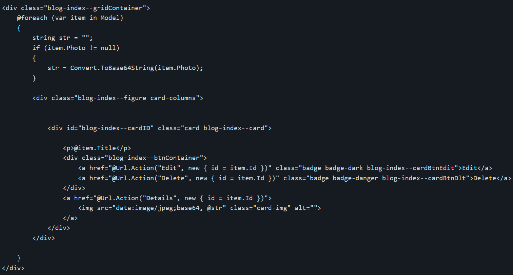
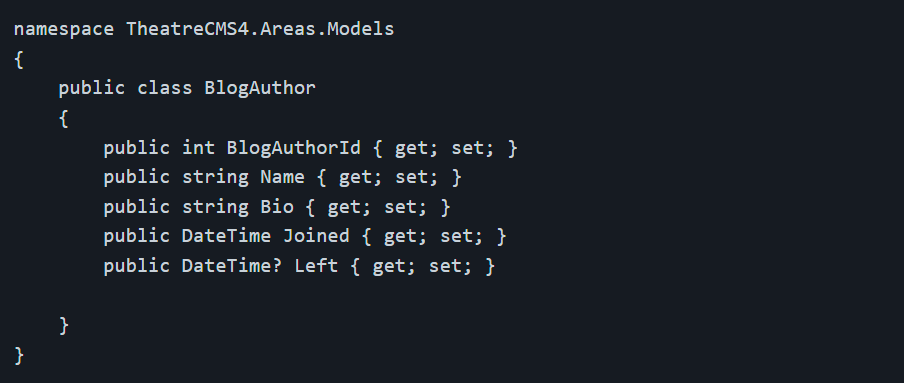
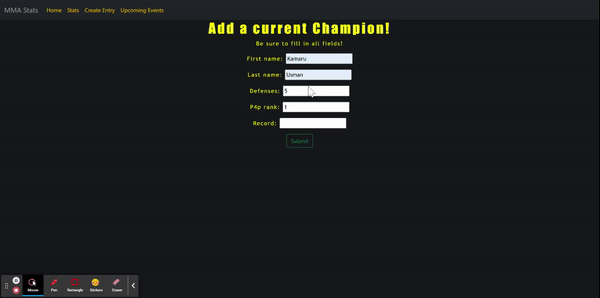

In this project, I helped create a Blog section of the website for a local theater.
This blog section allowed a user to upload an image to the database, then they would be able to see that
image and any other images shared by anybody else,
it also allowed them to edit and delete the images if needed.
I also added a very similar section but meant for specific authors at the theater, you could add an author's name,
bio, and date joined, as well as the date they left, then it would be stored in a database. I also handled the styling of these pages.
This project strengthened my C# and MVC knowledge exponentially, I thoroughly enjoyed this project and the learning experience it gave me.
The file upload is uploaded in the view, along with a Title for the image.
The initial file upload converts our uploaded image to a byte, using this function
This function is then called and sent to the View, where the image can then be redisplayed in the Index view where you can also see the other images that have been uploaded. It uses a foreach statement that allows it to display every entry from the database.
The Blog authors section is not much different, allowing you to add entries of specific authors and when they joined. Here is the model in which data is stored
For more information and projects please see my GitHub
While at The Tech Academy, me and my peers worked together on making a large-scale website using the Django framework.
This website was one that allowed users to create, update, and delete entries, view data that is web scraped from other sites,
and look at a multitude of subjects that we tracked using our website.
I created a section of the app called MMA Stats.
This would track the current MMA champions in the UFC. This project taught me so much about bug-fixing, problem-solving,
and troubleshooting. It also taught me so much about the Django framework that is impossible to learn from reading a book or watching a
tutorial. This project used the aforementioned Django framework, HTML and CSS, and a small amount of Javascript/Jquery.
Below I have added small code blocks that show the vital features of my application. A vital part of this project is the Create, read, update and delete features, here is how I achieved that. My create function allows you to fill out a form that simply stores your entries into a large database.
def MMACreate(request):
form = ChampForm(data=request.POST or None)
# if form data is valid
if request.method=='POST':
if form.is_valid():
# save form data to our model
form.save()
return redirect('MMA_Create') # allows us to redirect the user upon the form's completion.
context = {'form': form}
return render(request, "MMAStats/MMA_create.html", context)
It then sends the data to my html and sorts it by rank using this simple function
def DisplayStats(request):
champion_stats = Champions.objects.all().order_by("p4p_rank")
context = {'champion_stats': champion_stats}
return render(request, 'MMAStats/MMA_stats.html', context)
You can also update and delete specific data if needed. These functions allow us to do so. The update function redirects you to a page with the same form you used to create, this time however, it has the data of the entry that you wish to edit
def UpdateStat(request, pk):
stat = Champions.objects.get(pk=pk)
form = ChampForm(request.POST or None, instance=stat)
if form.is_valid():
form.save()
return redirect('MMA_Stats')
context = {'stat': stat, 'form': form}
return render(request, 'MMAStats/MMA_update.html', context)
def DeleteStat(request, pk):
context = {}
stat = get_object_or_404(Champions, pk=pk)
if request.method == "POST":
stat.delete()
return redirect("MMA_Stats")
return render(request, "MMAStats/MMA_delete.html", context)
I also utilized beautifulsoup, I used this to web scrape data from a website to gather the latest event information. This scrapes and parses specific data from the linked website and lets my website use it for my table.
def EventScrape(request):
r = requests.get("**link**")
event_list = []
bs = BeautifulSoup(r.content, 'html.parser')
upcoming_events = bs.find('div', class_='b-statistics__sub-entry')
events = upcoming_events.find_all('tr')[2:] # only grab starting from index 2
for tr in events:
td = tr.find_all('td')
row = [i.text for i in td]
field = row
event_list.append(field)
context = {'event_list': event_list}
return render(request, 'MMAStats/MMA_events.html', context)
Here you can see me navigate through the basic functions of my website.
All in all, this project helped not only my Python and Django skills but also my teamwork skills. Contributing to a larger codebase helped me understand pull requests, merge conflicts, and Git functions. I am very glad to have done this project with others, this has absolutely given me invaluable experience that I will use throughout my programming career.